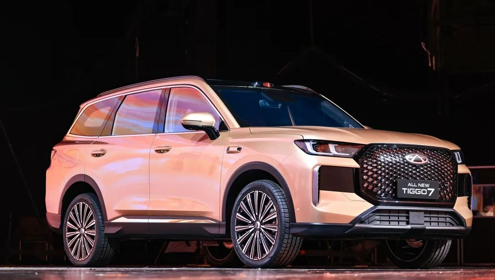
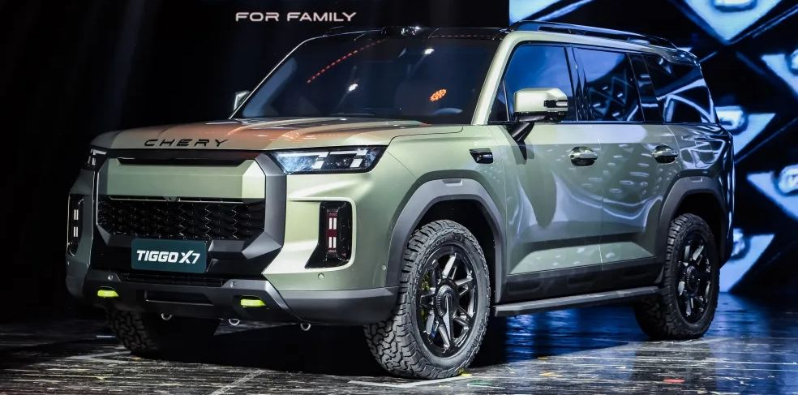

Chery · 全球首發 · 中國2026-11-22
奇瑞全新 TIGGO7 與首款硬派 TIGGOX7 在蕪湖同台全球首發
Chery Debuts the All-New TIGGO7 and TIGGOX7 Globally at Wuhu Brand Night
奇瑞在蕪湖品牌之夜以「Together. For Family」為題，同時發表城市取向的全新 TIGGO7 與戶外取向的 TIGGOX7。TIGGOX7 是奇瑞第一款美式硬派 SUV，也是 TIGGOX 系列第一款量產車，離地高度超過 200 mm、涉水 700 mm。
設計解析 Design Notes
- 一車兩性格同一個 For Family 概念拆成兩張臉：TIGGO7 走城市家用，TIGGOX7 走露營越野，讓買家直接按生活方式選。
- 虎臉家族TIGGO7 延續 TIGGO 家族以虎為靈感的車頭與厚實站姿，強調都會 SUV 的份量。
- 遊艇座艙TIGGO7 內裝用環抱式、受遊艇啟發的座艙設計，營造安靜的乘坐環境。
- 方正硬派TIGGOX7 用方正車身、厚重保桿與外露輪拱表達越野能力，配 540 度環景影像。